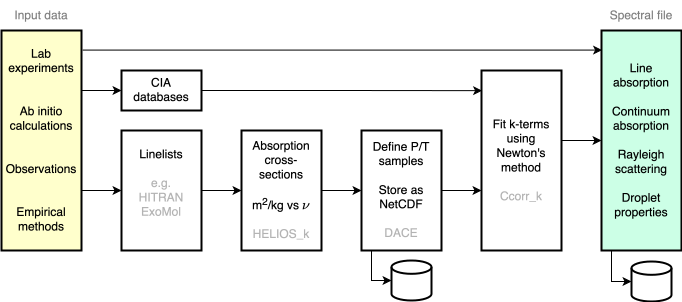

Radiative transfer
Radiation physics
Radiative transfer (RT) refers to the transport of radiation energy through a medium subject to the absorption, emission, and scattering properties of that medium [16].
Absorption of radiation along a path of length $dl$ through a gas of opacity $\kappa_\nu$ [$\mathrm{m}^2\ \mathrm{kg}^{-1}$] and mass density $\rho$ defines the optical depth:
\[d\tau_\nu = \kappa_\nu \rho \, dl\]
The effective radiating level of the atmosphere (the photosphere) is taken to be where some measure of the optical depth $\tau_\nu \sim 1$. This could be a slant or radial measurement from the top-of-atmosphere (TOA), depending on the viewing geometry.
In addition to molecular line absorption, collision-induced absorption (CIA) arises from brief multi-molecular complexes formed during collisions and line broadening. CIA can contribute a significant greenhouse effect at high pressures [16, 17].
Rayleigh scattering by gas molecules redirects a fraction of incoming stellar (shortwave) radiation upwards, raising the planet's albedo [16]. The scattering cross-section scales as $\lambda^{-4}$, so it is key when treating the transport of shorter-wavelength stellar radiation.
SOCRATES correlated-k
AGNI computes radiation fluxes using a two-stream approximation [18], which reduces the full angular dependence of the radiation field to separate upwelling and downwelling beams. This approximation is standard in both Earth-system and exoplanet atmosphere models [19, 20]. The bolometric net upward flux at a given level follows from integrating the up- and down-welling components over spectral regions (bands).
AGNI uses the correlated-k ($k$-distribution) method for approximating and combing gas absorption [19, 21]. This approach exploits the statistical distribution of absorption cross-sections within spectral regions rather than computing each individual spectral line. Within a given band, the opacity values $\kappa_\nu$ are sorted in ascending order and grouped into $k$-terms. Overlapping absorption by multiple gas species within a band is treated using the random-overlap or equivalent-extinction method [22].
AGNI nominally simulates RT using SOCRATES: a suite of numerical codes primarily developed by the UK Met Office [23, 24]. The model sums over spectral bands to yield bolometric fluxes:
\[F^{\uparrow,\downarrow} = \sum_{\text{band}} \sum_{\text{g-point}} w_g \, F^{\uparrow,\downarrow}_{\nu_g}\]
where $w_g$ are the $k$-term quadrature weights. SOCRATES implements the two-stream solution of [19, 25] with the PIFM/hemispheric-mean flux approximation [26].
Opacity sources
The $k$-terms are pre-tabulated from gas line-absorption opacities sourced primarily from the DACE database [27], which draws from the ExoMol and HITEMP molecular line databases [28, 29]. These are cross-sections integrated over the linelists with a line truncation width of 25 cm$^{-1}$.
Water continuum absorption cross-sections are computed using the MTCKD model [30, 31]. Other continua, including CIA between H₂–H₂ and H₂–He, are taken from the HITRAN collision-induced absorption section [32]. Rayleigh scattering and water cloud radiative properties are also included.
The flowchart below outlines how these absorption data are converted into a spectral file used at runtime.

You can find tools for fitting k-terms and processing line absorption data in the SOCRATES repository on GitHub.
Stellar irradiation
A key input to the radiation model is the shortwave downward-directed flux from the star at the top of the atmosphere. The instellation flux is calculated from the stellar bolometric luminosity $L_\star$ and the time-averaged planet–star separation $d$:
\[F^{\text{ins}} = \frac{L_\star}{4\pi d^2}\]
For a planet on an eccentric orbit with semi-major axis $a$ and eccentricity $e$, the time-averaged separation is $d = a(1 + e^2/2)$ [3].
The model represents the three-dimensional planet with a single 1D column by choosing a zenith angle $\theta_z$ and a stellar flux scale factor $f_s$, following [33]. Common choices include the substellar point ($\theta_z = 0$, $f_s = 1$), a global average for a rapidly rotating planet ($\cos\theta_z = 1/\sqrt{3}$, $f_s = 1/4$), and a dayside average for a tidally locked planet ($\cos\theta_z = 1/\sqrt{3}$, $f_s = 1/2$).
Surface reflectivity
Surface reflectivity can be modelled as a greybody with an albedo from 0 to 1 [34]. Alternatively, the surface can be modelled using empirical reflectance data that varies (spectrally) with wavelength. In the latter case a filepath must be provided via the config. The file can tabulate any one of: spherical reflectance ('r'), hemispherical emissivity ('e'), or single scattering albedo ('w'). These data are compiled on Zenodo here.
RFM line-by-line
AGNI also includes an interface to the Reference Forward Model (RFM), which is packaged as a binary since the RFM is closed-source [35]. This line-by-line interface provides an accurate means to validate and benchmark the correlated-k SOCRATES calculations, and has been used to verify spectral features in synthetic emission spectra [2, 3].
Bibliography for this page
- [2]
- H. Nicholls, R. T. Pierrehumbert, T. Lichtenberg, L. Soucasse and S. Smeets. Convective shutdown in the atmospheres of lava worlds. MNRAS 536, 2957–2971 (2025).
- [3]
- H. Nicholls, T. Lichtenberg, D. J. Bower and R. Pierrehumbert. Magma Ocean Evolution at Arbitrary Redox State. Journal of Geophysical Research: Planets 129, e2024JE008576 (2024).
- [16]
- K. Stamnes, G. E. Thomas and J. J. Stamnes. Radiative Transfer in the Atmosphere and Ocean (Cambridge University Press, 2017).
- [17]
- R. Pierrehumbert. Principles of planetary climate (Cambridge University Press, Cambridge New York, 2010).
- [18]
- W. Zdunkowski, R. Welch and G. Kork. AN INVESTIGATION OF THE STRUCTURE OF TYPICAL TWO STREAM-METHODS FOR THE CALCULATION OF SOLAR FLUXES AND HEATING RATES IN CLOUDS. BEITR. PHYS. ATMOSPH.; DEU; DA. 1980; VOL. 53; NO 2; PP. 147-166; ABS. GER/FRE; BIBL. 16 REF. (1980).
- [19]
- J. M. Edwards and A. Slingo. Studies with a flexible new radiation code. I: Choosing a configuration for a large-scale model. Quarterly Journal of the Royal Meteorological Society 122, 689–719 (1996). Accessed on Jun 2, 2023.
- [20]
- E. K. Lee. Testing Approximate Infrared Scattering Radiative-transfer Methods for Hot Jupiter Atmospheres. Astrophys. J. 965, 115 (2024).
- [21]
- A. A. Lacis and V. Oinas. A description of the correlatedkdistribution method for modeling nongray gaseous absorption, thermal emission, and multiple scattering in vertically inhomogeneous atmospheres. Journal of Geophysical Research 96, 9027 (1991). Publisher: American Geophysical Union (AGU).
- [22]
- Amundsen, David S., Tremblin, Pascal, Manners, James, Baraffe, Isabelle and Mayne, Nathan J. Treatment of overlapping gaseous absorption with the correlated-k method in hot Jupiter and brown dwarf atmosphere models. A&A 598, A97 (2017).
- [23]
- [24]
- D. E. Sergeev, N. J. Mayne, T. Bendall, I. A. Boutle, A. Brown, I. Kavčič, J. Kent, K. Kohary, J. Manners, T. Melvin, E. Olivier, L. K. Ragta, B. Shipway, J. Wakelin, N. Wood and M. Zerroukat. Simulations of idealised 3D atmospheric flows on terrestrial planets using LFRic-Atmosphere. Geoscientific Model Development 16, 5601–5626 (2023).
- [25]
- J. M. Edwards. Efficient Calculation of Infrared Fluxes and Cooling Rates Using the Two-Stream Equations. J. Atmos. Sci. 53, 1921–1932 (1996).
- [26]
- W. Zdunkowski and G. Korb. Numerische methoden zur lösung der strahlungsübertragungsgleichung. Promet 2, 1985 (1985).
- [27]
- S. L. Grimm, M. Malik, D. Kitzmann, A. Guzmán-Mesa, H. J. Hoeijmakers, C. Fisher, J. M. Mendonça, S. N. Yurchenko, J. Tennyson, F. Alesina, N. Buchschacher, J. Burnier, D. Segransan, R. L. Kurucz and K. Heng. HELIOS-K 2.0 Opacity Calculator and Open-source Opacity Database for Exoplanetary Atmospheres. The Astrophysical Journal Supplement Series 253, 30 (2021), arXiv:2101.02005 [astro-ph.EP].
- [28]
- J. Tennyson and S. Yurchenko. The ExoMol Atlas of Molecular Opacities. Atoms 6, 26 (2018). Accessed on Sep 13, 2023.
- [29]
- L. Rothman, I. Gordon, R. Barber, H. Dothe, R. Gamache, A. Goldman, V. Perevalov, S. Tashkun and J. Tennyson. HITEMP, the high-temperature molecular spectroscopic database. Journal of Quantitative Spectroscopy and Radiative Transfer 111, 2139–2150 (2010). XVIth Symposium on High Resolution Molecular Spectroscopy (HighRus-2009).
- [30]
- E. Mlawer, V. Payne, J. -.-L. Moncet, J. Delamere, M. Alvarado and D. Tobin. Development and recent evaluation of the MTCKD model of continuum absorption. Philosophical Transactions of the Royal Society of London Series A 370, 2520–2556 (2012).
- [31]
- E. Mlawer, K. Cady-Pereira, J. Mascio and I. Gordon. The inclusion of the MTCKD water vapor continuum model in the HITRAN molecular spectroscopic database. Journal of Quantitative Spectroscopy and Radiative Transfer 306, 108645 (2023).
- [32]
- T. Karman, I. E. Gordon, A. van der Avoird, Y. I. Baranov, C. Boulet, B. J. Drouin, G. C. Groenenboom, M. Gustafsson, J.-M. Hartmann, R. L. Kurucz, L. S. Rothman, K. Sun, K. Sung, R. Thalman, H. Tran, E. H. Wishnow, R. Wordsworth, A. A. Vigasin, R. Volkamer and W. J. van der Zande. Update of the HITRAN collision-induced absorption section. Icarus 328, 160–175 (2019).
- [33]
- T. W. Cronin. On the Choice of Average Solar Zenith Angle. Journal of the Atmospheric Sciences 71, 2994–3003 (2014). Accessed on Jun 2, 2023.
- [34]
- B. Hapke. Theory of Reflectance and Emittance Spectroscopy. 2 Edition (Cambridge University Press, 2012).
- [35]
- A. Dudhia. The Reference Forward Model (RFM). JQSRT 186, 243–253 (2017).